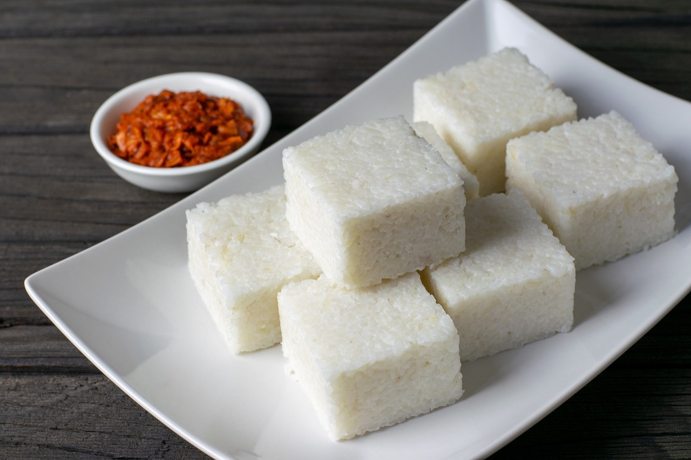
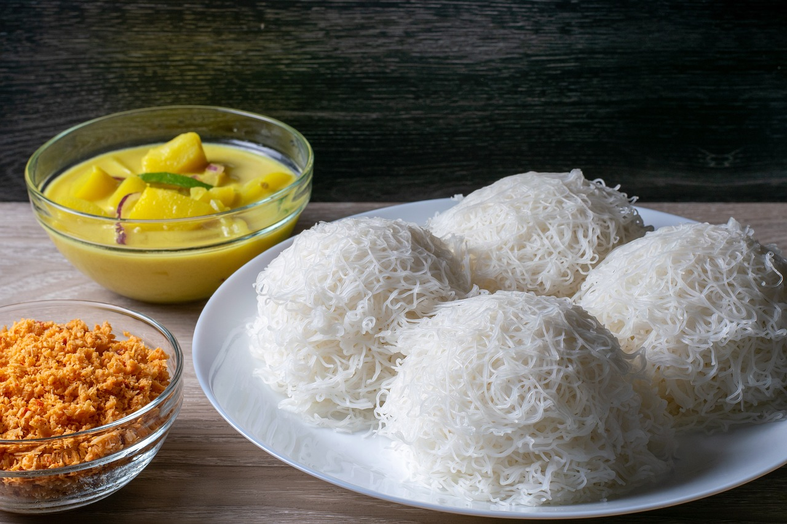
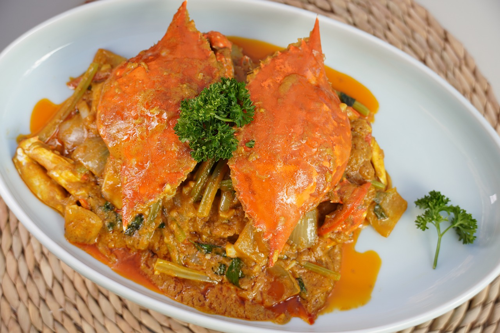

Sri Lankan cuisine is a fusion of flavors and ingredients from different regions, influenced by its rich history and diverse culture. The country's location along ancient trade routes has also played a role in shaping its cuisine, with influences from South India, Southeast Asia, and the Middle East. Rice is a staple food in Sri Lanka, and it is usually served with a variety of curries, sambols (spicy condiments), and chutneys. Curries are the main component of Sri Lankan cuisine, with a wide range of vegetarian and non-vegetarian options available. The curries are made using a blend of spices, such as coriander, cumin, cardamom, cinnamon, and turmeric, which give them their distinctive flavor and aroma. Sri Lankan cuisine also features a variety of seafood dishes, as the country is surrounded by the Indian Ocean. Popular seafood options include crab, prawns, and fish, which are often cooked in a spicy curry or grilled and served with a variety of sambols. In addition to curries and seafood dishes, Sri Lankan cuisine also includes a range of snacks and street foods, such as hoppers (a type of pancake made with rice flour and coconut milk), kottu roti (a stir-fry made with chopped roti bread, vegetables, and meat), and vadai (a fried snack made from lentil flour)
Milk rice, also known as kiribath, is a traditional Sri Lankan dish made from rice and coconut milk. It is often served during special occasions, such as weddings, festivals, and religious ceremonies. To make milk rice, white rice is cooked with coconut milk and a pinch of salt until it becomes soft and creamy. The mixture is then spread out on a flat surface and allowed to cool and set. Once it has cooled, it is cut into diamond-shaped pieces and served with a variety of accompaniments, such as spicy sambols or sweet jaggery (palm sugar) syrup. Milk rice is a staple dish in Sri Lankan cuisine and is considered to be a symbol of good luck and prosperity. It is often served as a breakfast dish, but can also be enjoyed as a snack or dessert.
String hoppers, also known as idiyappam, are a popular dish in South Indian and Sri Lankan cuisine. They are made by mixing rice flour with hot water to form a dough, which is then pressed through a special tool called a "string hopper press" to create thin, noodle-like strands. The strands are then steamed to cook them and served with a variety of side dishes, such as curries or coconut chutney. String hoppers are a staple food in many households and are often eaten for breakfast or as a light meal.
Jaffna crab curry is a popular dish in the northern region of Sri Lanka known as Jaffna. It is a spicy and flavorful curry made with fresh crabs, a variety of aromatic spices, coconut milk, and tamarind. To make Jaffna crab curry, fresh crabs are cleaned and cooked in a spicy broth made with a blend of spices such as coriander, cumin, turmeric, and chili powder. The curry is then flavored with tamarind pulp, which gives it a tangy and slightly sour taste. Coconut milk is then added to the curry, which gives it a rich and creamy texture. The curry is simmered until the crabs are cooked through and the flavors have melded together. Jaffna crab curry is usually served with steamed rice, roti, or string hoppers. It is a popular dish for special occasions, especially during festive seasons like Tamil New Year and Diwali.
